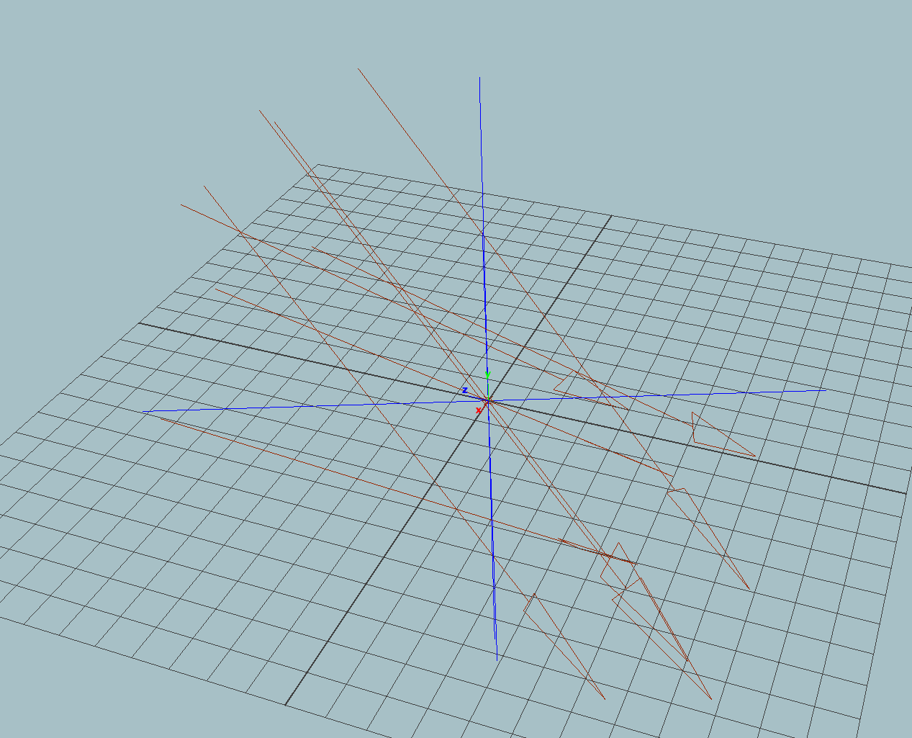
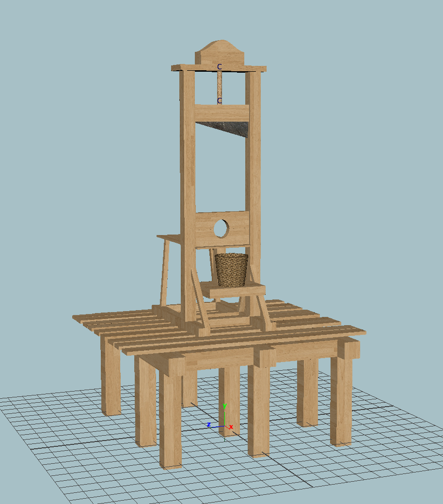

If you use any of my rigs, please copy-paste the following into your video description:
Player Rig by Ravbug Animations
Youtube: https://www.youtube.com/ravbuganimations
Lighting Asset
The lighting setup I used to light The Adventures of the Wolf and the Ocelot Episode 2 Best combined with a Mental Ray IBL sky with a blue gradient attached to the color value.
Download Lighting Rig
Guillotine Asset
Created for a school project. Download a wicker basket, a wood, and a metal texture and apply them to the 3 materials
Download Guillotine rig